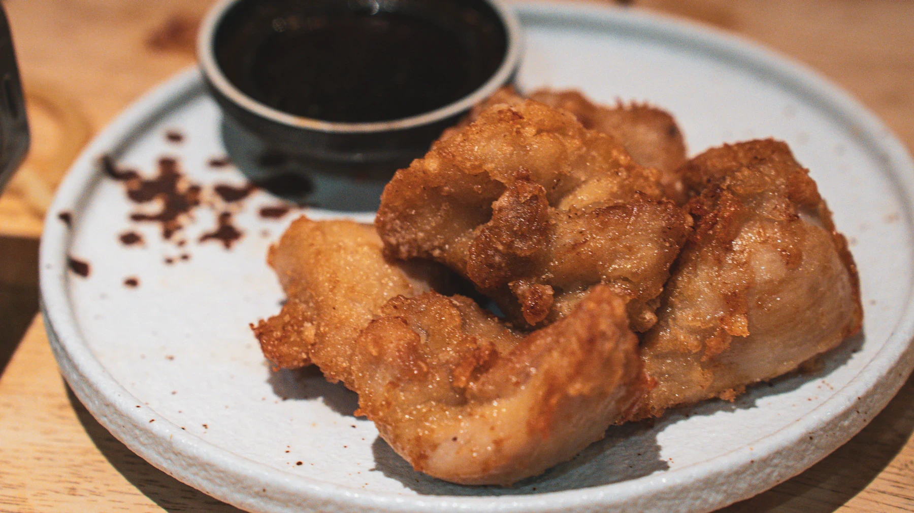
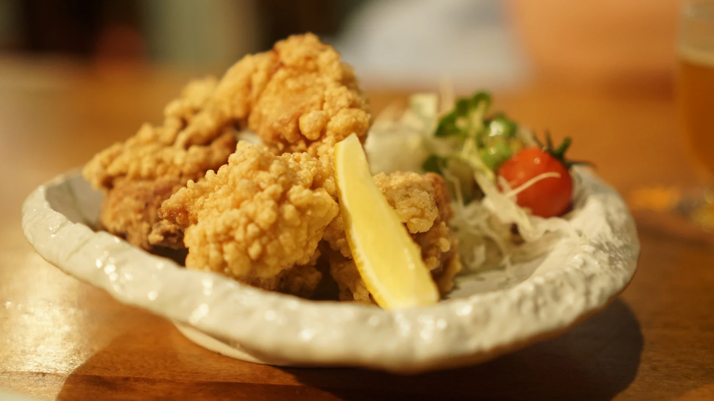
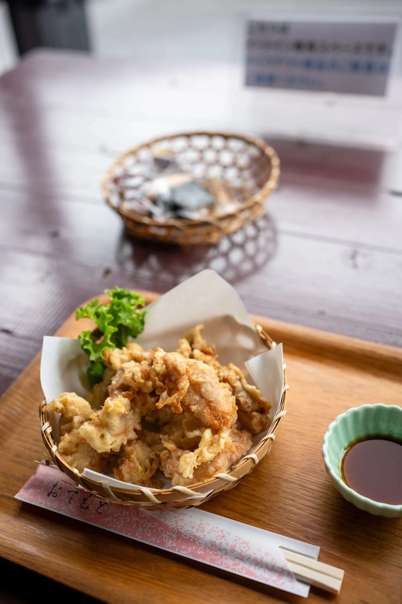
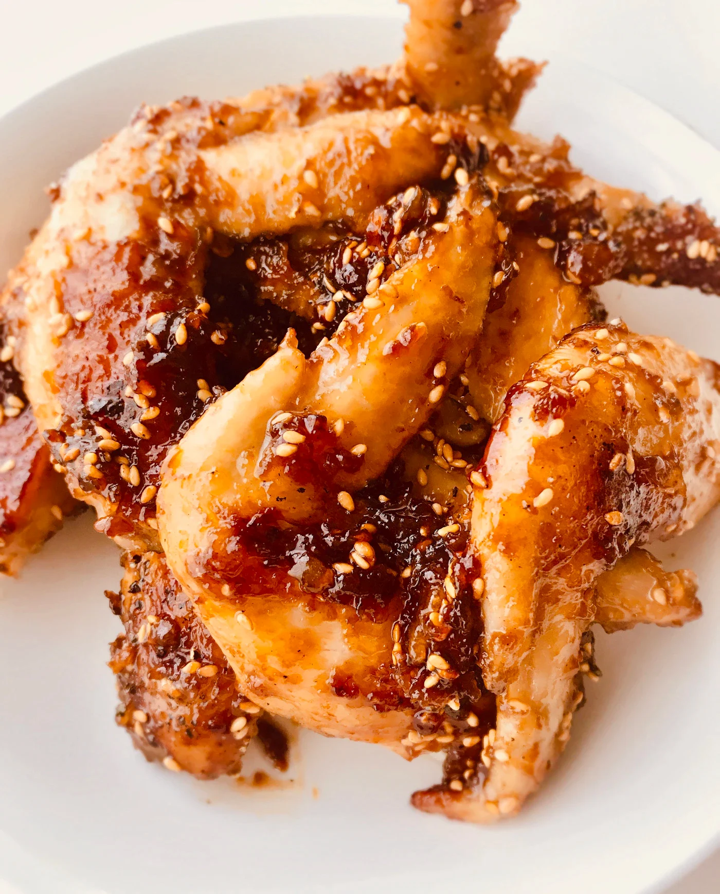
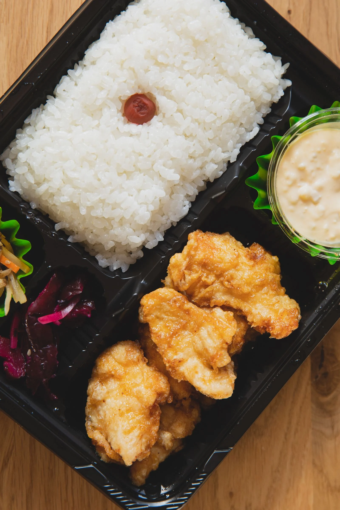

まずはこれ。
骨なし唐揚げ
5個入り
税込750円
徳島本店 ／ 藍住店
お店と電話番号徳島市・藍住町の
からあげテイクアウト専門店
今夜のおかずに。
明日のお弁当に。


カリッジュのからあげ
しょうゆベースの秘伝のタレに漬け込んで。
にんにくなどの香辛料を使わず、食べやすく。
ふわっと、カリッとした衣で、冷めてもやわらか。
食卓にもう一品、どうぞ。
何にしようか、迷ったら。
表示価格は税込です

まずはこれ。
5個入り
税込750円

今夜のもう一品。
3本入り
税込450円

お昼にも、晩ごはんにも。
お弁当
税込700円
メニュー・価格は提案用の掲載内容です。店舗ごとの取り扱いは確認前です。
お持ち帰りはこちらから
徳島市・南矢三町
11:00〜20:00
定休日：不定休 ／ 営業時間は要確認
徳島本店に電話080-4037-3163住所・地図を見る藍住町・笠木
11:00〜14:00／15:00〜20:00
定休日：火曜日
藍住店に電話088-692-5129住所・地図を見る徳島本店・藍住店を仮の対象とした構成案です。